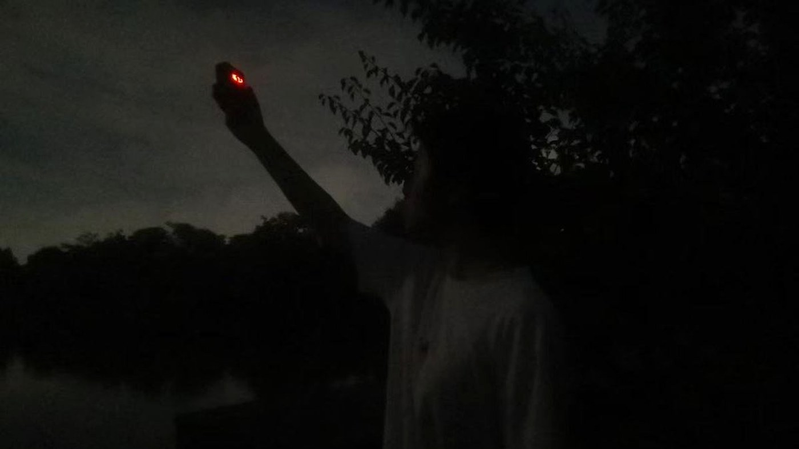
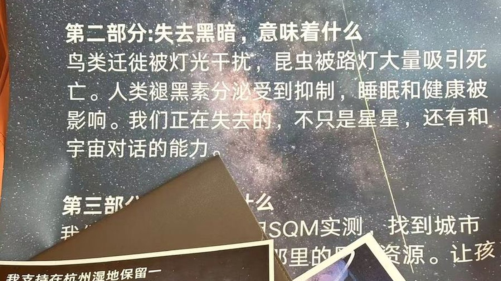

具体做法
从一盏灯到一座城，个人、学校、社区与政策各层面可以做的事，已经在「我们能做什么」一节中逐条列出。这一页不再重复。
这里只说明两件事：我们正在做什么，以及你可以怎么加入。
我们在做的
暗夜计划目前有三项固定开展的工作，都在杭州本地，都由中学生组织与执行。
路边天文
把望远镜搬到人流经过的地方——小区广场、公园入口、学校操场——让路人免费看一眼月亮或行星。不需要报名，不需要知识基础，排队就能看。
这项工作的价值不在观测本身，而在第一次：很多人是第一次通过望远镜看到月球的环形山，或者是第一次知道木星有卫星。这一眼往往比十篇文章更有说服力。
暗夜计划参与的路边天文活动中，单次最多吸引过约 40 人排队。多数人此前从未通过望远镜看过天体。
StarVan
把望远镜装上车，开到城市光污染较低的地方组织观测。相比固定在校园里的活动，StarVan 的机动性让我们可以选点，也可以把设备带到没有条件组织观测的社区或学校。
活动中最常被提到的一句话是：「我敢打赌，中国 99% 的人没有亲眼见过月球。」这句话并不精确，但它指出的事实是成立的：月球每天都在天上，而绝大多数城市居民从未认真看过它。

社区科普
以展板、讲座与现场观测的形式进入社区与学校，讲的是最基础的问题：为什么城市里看不见星星，光污染是什么，以及为什么这值得在意。
我们做过的一次实践是在西溪湿地布置展板并征集签名，收集居民对「保留一片能看见星星的区域」的支持。这类材料在推动实际改变时，往往比数据更直接。

加入我们
下面这份宣传材料可以直接打印使用。不需要授权，不需要署名，不需要联系我们。打印出来贴在公告栏、贴在教室、摆在观测活动现场，或者分发给路过的人，都可以。

这一页的文字版见宣传材料，方便在手机上阅读与复制。
这份材料是中文的。如果你在别的城市、别的国家，想做同样的事，我们很乐意看到它被翻译成其他语言——只要不改动其中的科学内容。
如果你自己做了新的材料，也欢迎分享。这个网站的所有内容都开放引用，注明来源即可。
联系与投稿：ronghui0202@gmail.com